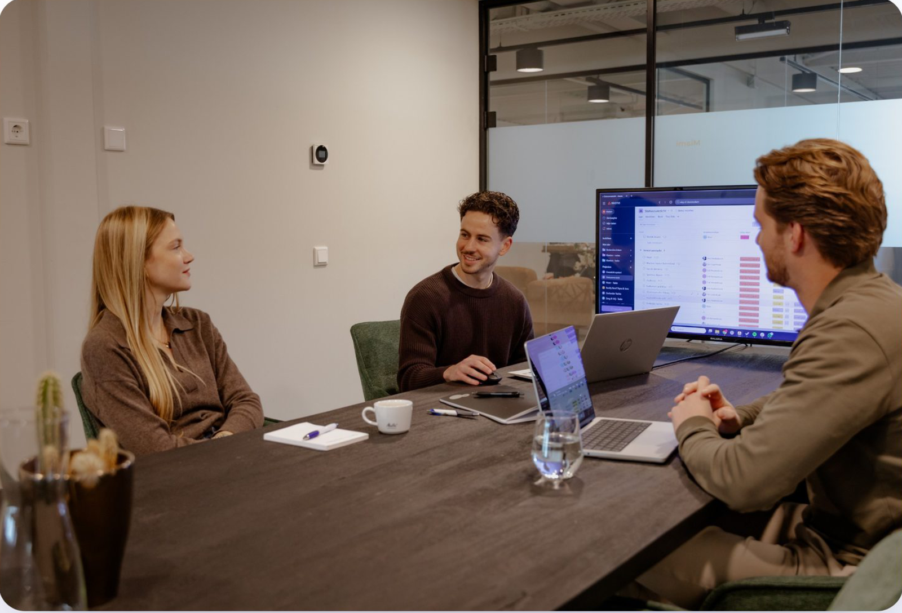

Kickoff Google Ads
Ayano Direct
× aizy
ayanodirect.eu
oktober 2026
Vandaag
Waar we vandaag
heen willen
Elkaar leren kennen.
Scherp krijgen wat succes is, in cijfers.
Alles ophalen wat we nodig hebben om te bouwen en te meten.
Agenda: acht thema's
01Het bedrijf en de huidige situatie
02Doelstellingen en verwachtingen
03Assortiment en marge
04Klanten en het koopproces
05Concurrentie en positionering
06Meting en dataLayer
07Accounts, productfeed en Shopping
08Samenwerking en praktisch
tryaizy.com
Uit de intake
Wat we al weten
Propositie
Online B2B-platform voor gepersonaliseerd glaswerk
Zelf decorateur en fabrikant, geen tussenhandel
Keramische zeefdruk, digitale full-colour bedrukking en lasergravure
Markt
Pilot uitsluitend in België, landelijk
Nederlands voor Vlaanderen, Frans voor Wallonië en Brussel
Nederland bewust niet, vanwege de resellerstructuur
Frankrijk gepland vanaf 2027
Doel en KPI's
Budget € 2.500 per maand
Primair: online bestellingen en omzet. Secundair: kwalitatieve offerte- en contactaanvragen
Omzet, aantal orders, kosten per order, gemiddelde orderwaarde, ROAS (omzet per euro advertentiekosten), nieuwe klanten, brutowinstbijdrage
Vertrekpunt
Nog nooit betaald geadverteerd
Verkeer tot nu organisch: via SEO (vindbaarheid in Google), social en nieuwsbrieven
GA4 en Google Tag Manager (meting van websitebezoek) recent geïmplementeerd
Kanalen in beeld: Google Ads en Meta Ads
tryaizy.com
Thema 1
Het bedrijf en de huidige situatie
01Hoeveel omzet draait Ayano Direct per jaar, en welk deel komt via de webshop?
02Hoeveel online bestellingen en hoeveel offerteaanvragen komen er nu per maand binnen?
03Wat is de gemiddelde orderwaarde, en hoe verschilt die per categorie?
04Welk deel van de omzet komt uit België, en hoe verhoudt Nederlandstalig zich tot Franstalig?
05Hoe komen nieuwe klanten vandaag binnen: organisch, nieuwsbrief, beurzen, mond-tot-mond, resellers?
06Hoeveel klanten bestellen opnieuw, en wat is een klant over de jaren waard?
07Zijn er seizoenspieken (zomer, eindejaar, festivals) waar we het budget op moeten afstemmen?
08Hoeveel extra orders per maand kunnen jullie aan zonder dat de levertijd oploopt?
tryaizy.com
Thema 2
Doelstellingen en verwachtingen
01Hoeveel extra online omzet per maand maakt de pilot geslaagd?
02Wat is de brutomarge op een gemiddelde bestelling? Dat bepaalt vanaf welke omzet per euro advertentie het winst is.
03Wat mag een nieuwe klant maximaal kosten, en wat een nieuwe order?
04Hoe lang loopt de pilot, en wanneer beoordelen we: na drie of na zes maanden?
05Wat is de ondergrens waarbij we stoppen?
06Is er budget om op te schalen als het werkt, en vanaf welk signaal?
07Telt een offerteaanvraag voor een groot volume even zwaar als een webshoporder?
08Wie beoordeelt de resultaten aan jullie kant, en op welke cijfers?
tryaizy.com
Thema 3
Assortiment en marge
01Welke categorieën verkopen online het best, en welke leveren de meeste marge?
02Welke categorieën willen jullie juist niet pushen: capaciteit, voorraad, lage marge?
03Minimumoplage is 36 glazen, 24 flessen, 100 kunststof. Klopt dat, en vanaf welke oplage wordt een order interessant?
04Hoe lang duurt het van bestelling tot levering, en mogen we daar iets over beloven?
05Welke decoratietechniek wordt het vaakst gekozen, en welke levert het meest op?
06Op de site staat "vanaf 36 stuks" naast oudere teksten met "72 stuks". Welke is juist?
07Mogen we "vaatwasserbestendig" gebruiken? De voorwaarden zeggen "alleen bij huishoudelijk gebruik".
08Zijn er producten of acties gepland voor de komende maanden, zoals eindejaar of een nieuwe lijn?
tryaizy.com
Thema 4
Klanten en het koopproces
01Wie bestelt er precies: eigenaar, inkoper, marketeer, eventorganisator?
02Hoe lang duurt het van eerste bezoek tot bestelling, en hoeveel contactmomenten zitten daartussen?
03Welk deel bestelt zelf online en welk deel vraagt een offerte via mail of telefoon?
04Wanneer is een offerte- of contactaanvraag voor jullie "kwalitatief"?
05Hoe verdelen horeca, brouwerijen, bedrijven, verenigingen en wederverkopers zich in omzet?
06Wat vragen klanten het vaakst voordat ze bestellen: prijs, levertijd, drukproef, bestandsformaat?
07Er is nu geen offerte- of contactformulier. Kunnen we een offertepagina laten bouwen voor grote volumes en maatwerk?
08Hoe snel reageren jullie op een aanvraag, en wie doet dat?
tryaizy.com
Thema 5
Concurrentie en positionering
01Wie zijn de belangrijkste concurrenten in België, online en offline?
02Wie van hen adverteert al in Google? Promotieartikelen-leveranciers bieden nu op "glazen bedrukken".
03Waarom kiezen klanten Ayano Direct boven een promotieartikelen-leverancier?
04Hoe zit Ayano qua prijs: goedkoper, gelijk of duurder dan de markt?
05Hoe voorkomen we dat Belgische bezoekers bij de Nederlandse resellers uitkomen, en andersom?
06Welke argumenten mogen we gebruiken: "direct bij de fabrikant", "Made in Belgium", "25 jaar ervaring"?
07Zijn er keurmerken, certificaten of klantreferenties die we mogen noemen?
08Bieden concurrenten op jullie naam, en mogen wij "Ayano" in advertenties gebruiken?
tryaizy.com
Thema 6
Meting en dataLayer
01Wie heeft de webshop gebouwd (Syntec-platform) en wie kan er code in aanpassen?
02Kan de ontwikkelaar dataLayer-events toevoegen: view_item, add_to_cart, begin_checkout en purchase?
03Kan purchase het ordernummer, het bedrag exclusief btw, de valuta en de artikelen meegeven?
04Komt elke bestelling op dezelfde bedankpagina, ook een order op factuur in plaats van via Stripe?
05Mag het e-mailadres van de besteller versleuteld mee naar Google voor betere conversiemeting?
06Wie beheert Google Tag Manager en GA4, en kunnen wij publiceren?
07De cookiebanner heeft nu alleen "Begrepen" en geen keuze. Mogen wij een banner met Consent Mode plaatsen?
08Is er een testomgeving waar we de meting kunnen controleren vóór livegang?
tryaizy.com
Thema 7
Accounts, productfeed en Shopping
01Is er al een Google Ads-account, een Merchant Center of een Google Bedrijfsprofiel, en op wiens naam?
02Kunnen jullie een productexport leveren (CSV, XML of API) met prijs, foto, voorraad en categorie, in NL en FR?
03Kan de productpagina de prijs inclusief btw tonen naast exclusief? Google eist dat voor Shopping.
04Welke prijs tonen we in Shopping: het blanco artikel of een vaste oplage met bedrukking?
05Zijn er productfoto's mét bedrukking per artikel, of alleen blanco?
06Werken jullie al met Channable of een ander feedsysteem?
07Is er een Meta-pixel of een ander meetscript dat we moeten kennen?
08Hoe en hoe vaak worden voorraad en prijzen bijgewerkt?
tryaizy.com
Thema 8
Samenwerking en praktisch
01Wie is het aanspreekpunt en wie beslist over budget en teksten?
02Hoe snel kunnen we akkoord krijgen op advertentieteksten?
03Wie controleert de Franse teksten? Op de site staan nu enkele Franse pagina's in het Engels.
04Is er beeldmateriaal (logo, productfoto's, sfeerfoto's) dat we mogen gebruiken?
05Welk rapportageritme willen jullie: wekelijks kort, maandelijks uitgebreid?
06Via welk account loopt het advertentiebudget en wie betaalt Google?
07Wanneer willen jullie live, en wat moet daarvoor aan jullie kant af zijn?
08Wat moeten wij weten over Ayano dat nergens op de website staat?
tryaizy.com
Na vandaag
Zo gaan we verder
01
Toegang regelen en meting controleren
We krijgen toegang tot de accounts en checken of bestellingen en aanvragen goed binnenkomen.
02
Campagnestructuur bouwen en afstemmen
We zetten de campagnes in het Nederlands en Frans op en leggen ze aan jullie voor.
03
Livegang
Na jullie akkoord gaan de advertenties live.
04
Eerste beoordeling
Na de afgesproken termijn kijken we samen naar de cijfers en beslissen we over de volgende stap.
tryaizy.com
Checklist
Wat we van jullie
nodig hebben
Toegang tot GA4
Ontwikkelaar beschikbaar voor dataLayer-events
Toegang tot Google Tag Manager
Offertepagina met formulier (NL en FR)
Toegang tot Google Ads, of een nieuw account op naam van Ayano
Beeldmateriaal en logo
Merchant Center of productfeed
Franse vertalingen of een contactpersoon daarvoor
Productexport voor de feed (NL en FR)
Antwoorden op de open vragen van vandaag
Prijs inclusief btw op de productpagina
Akkoord op het plan
tryaizy.com